CH04 compact lettered review

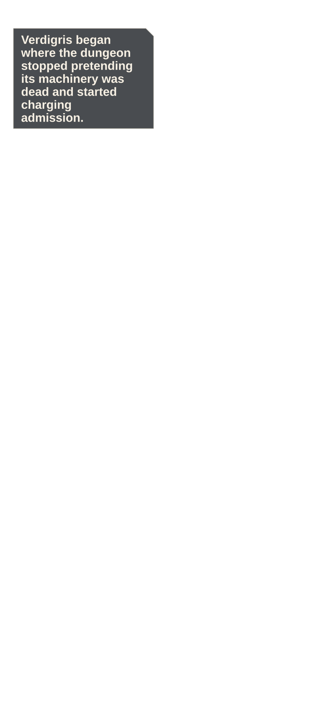
P001 · high · STORY
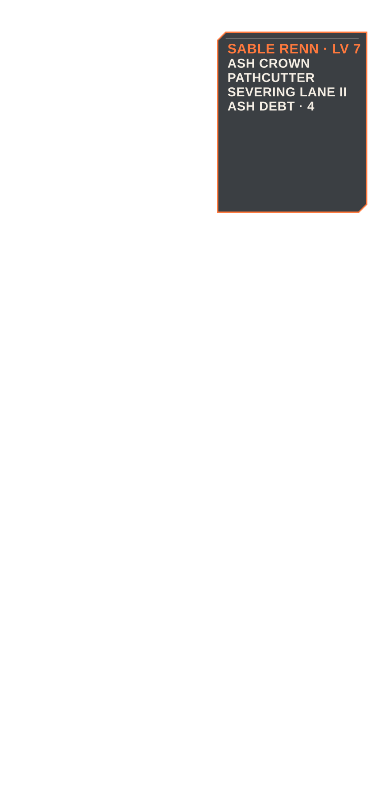
P002 · low · STORY
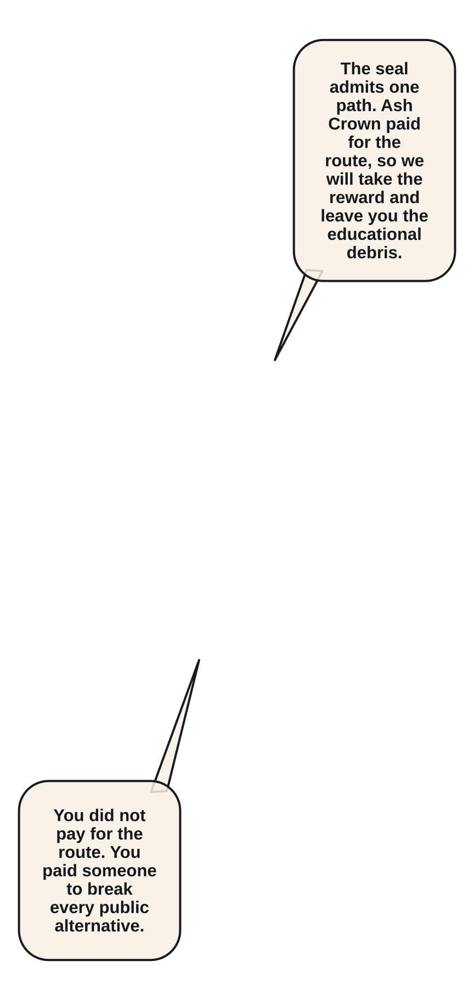
P003 · low · STORY
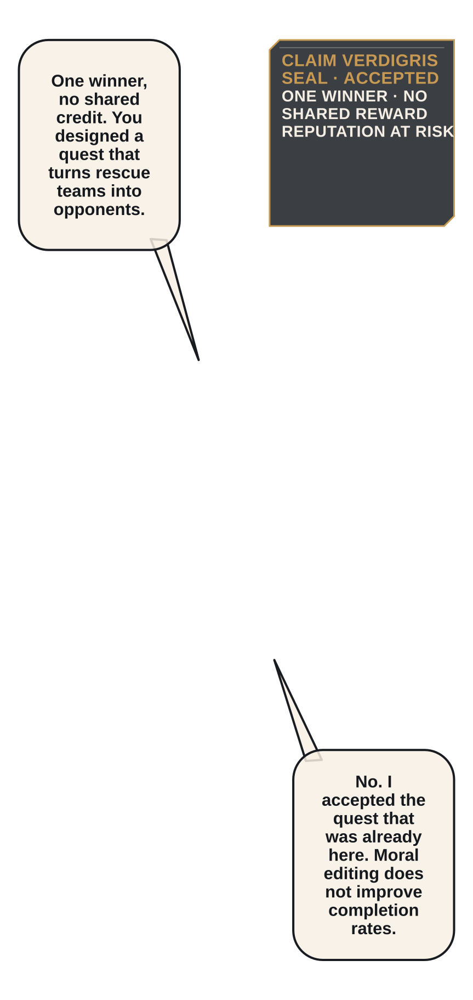
P004 · moderate · STORY
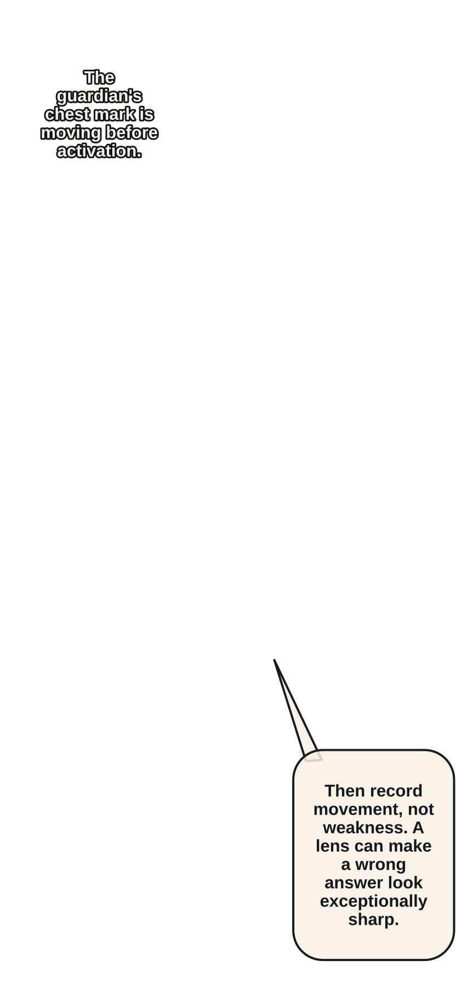
P005 · low · STORY P006 · low · STORY
P006 · low · STORY
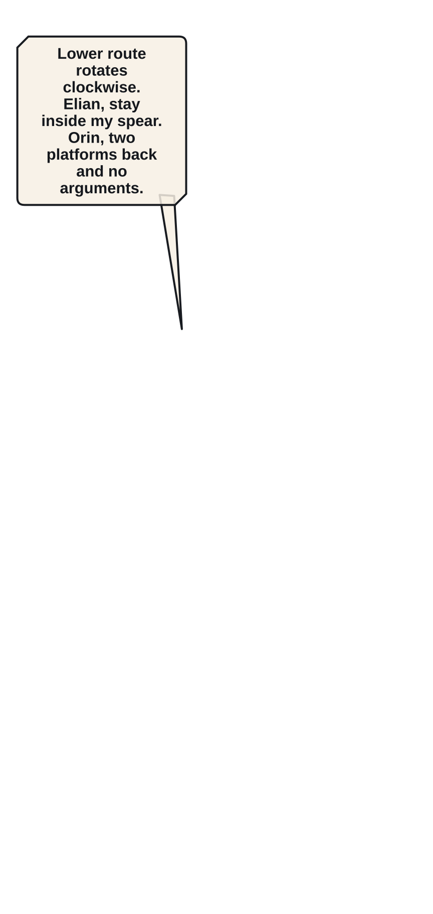
P007 · low · ACTION
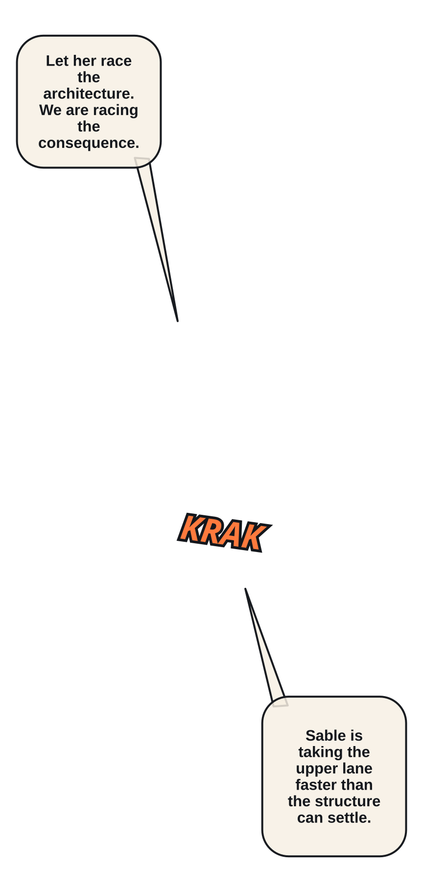
P008 · moderate · ACTION P009 · low · ACTION
P009 · low · ACTION
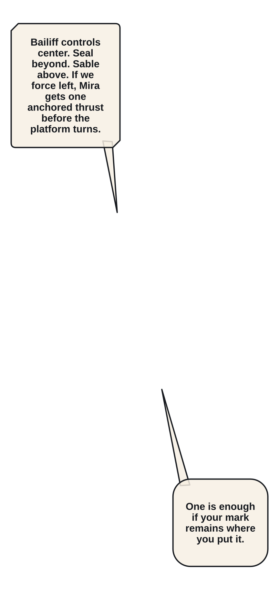
P010 · low · ACTION P011 · low · ACTION
P011 · low · ACTION
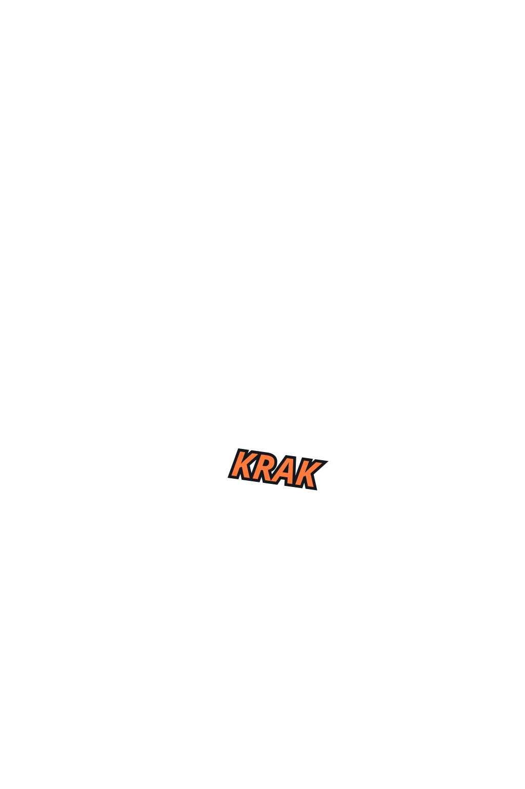
P012 · moderate · ACTION
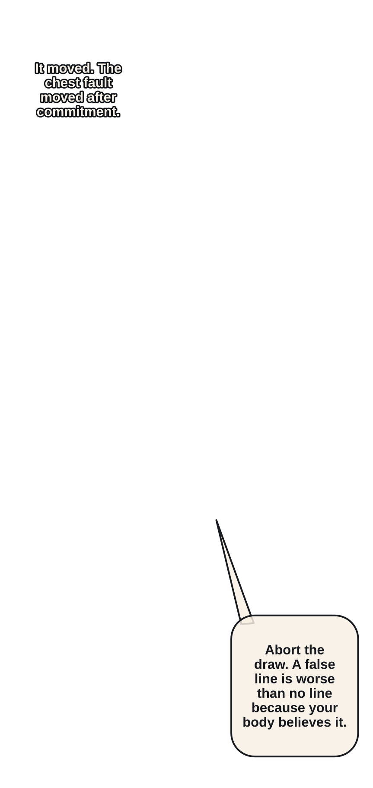
P013 · low · ACTION
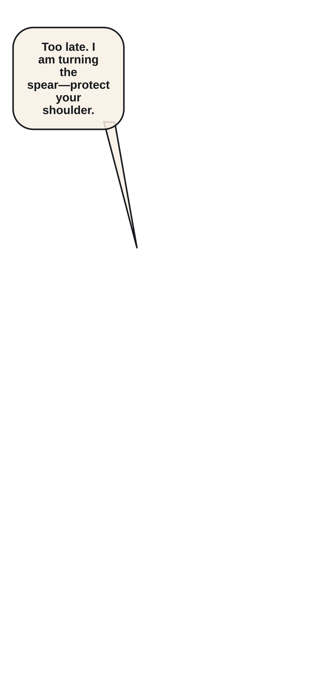
P014 · low · ACTION P015 · low · ACTION
P015 · low · ACTION
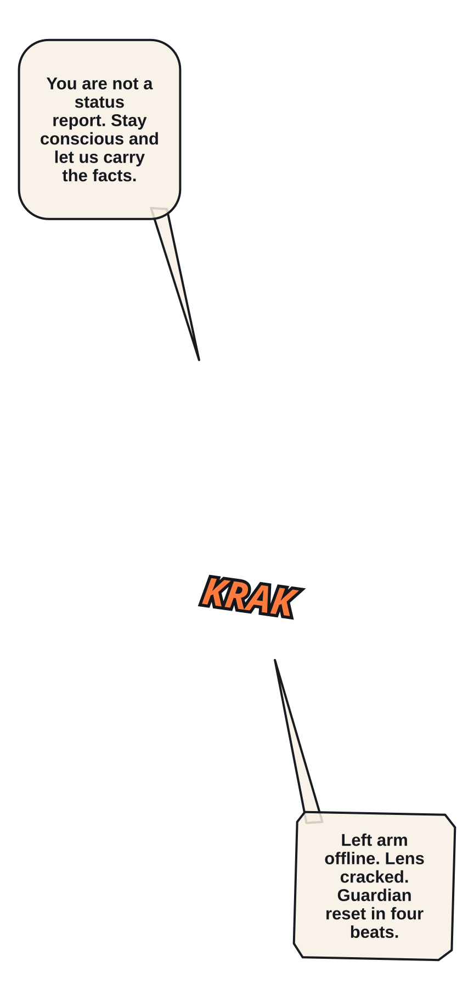
P016 · moderate · ACTION P017 · low · ACTION
P017 · low · ACTION
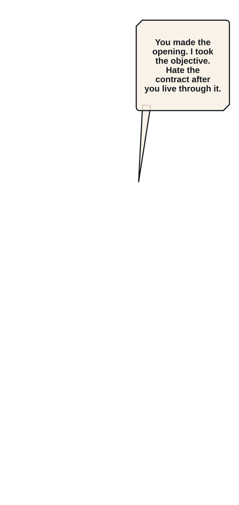
P018 · high · STORY P019 · low · STORY
P019 · low · STORY
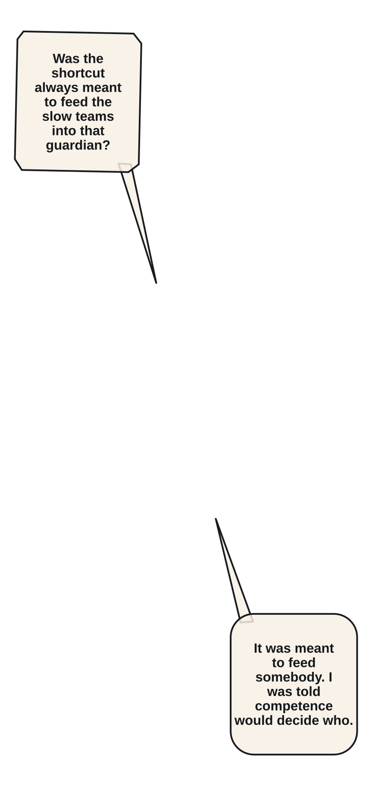
P020 · low · STORY
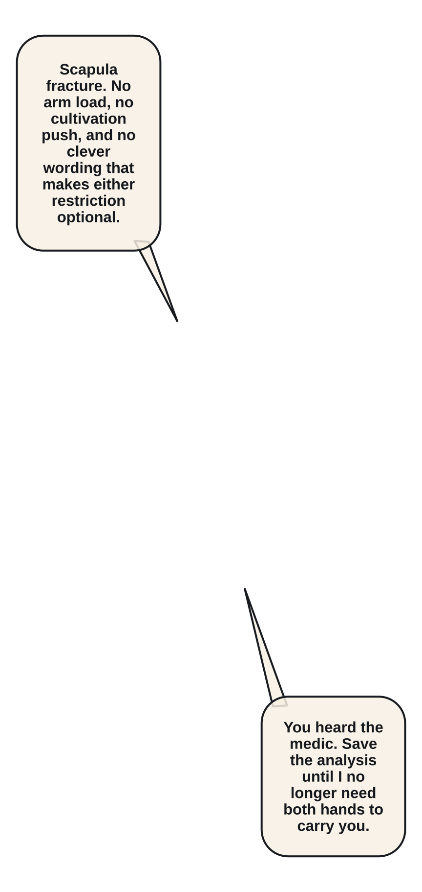
P021 · moderate · STORY P022 · low · STORY
P022 · low · STORY
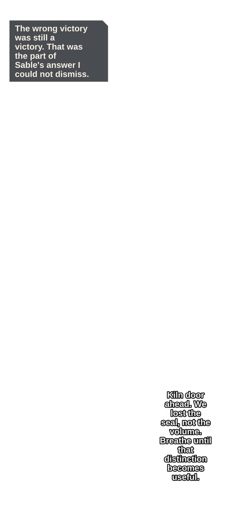
P023 · low · STORY
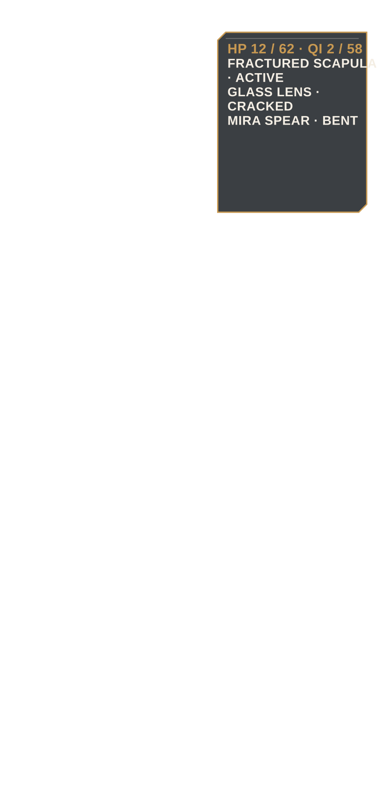
P024 · moderate · STORY